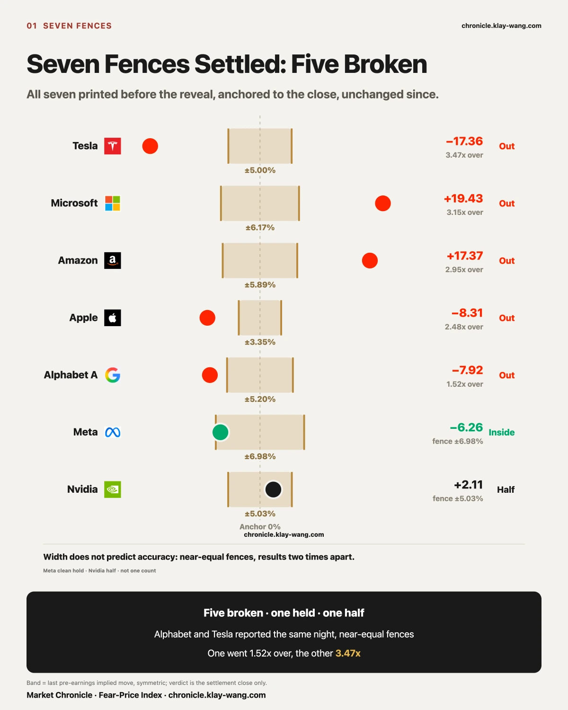
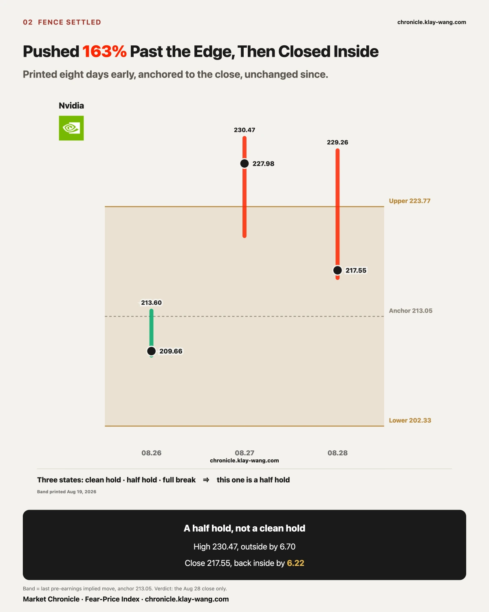
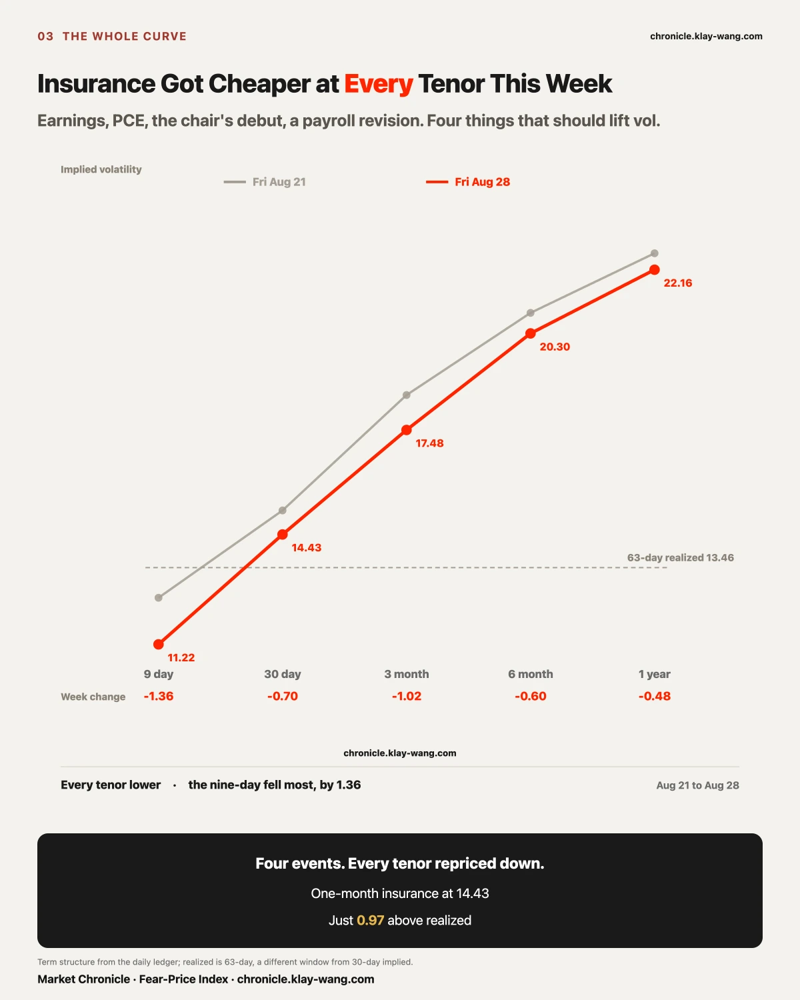
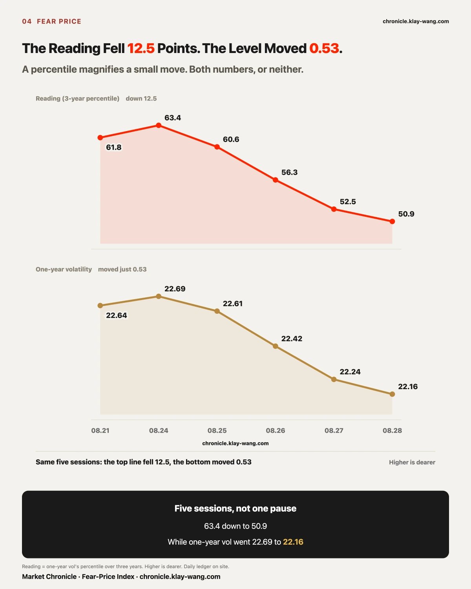
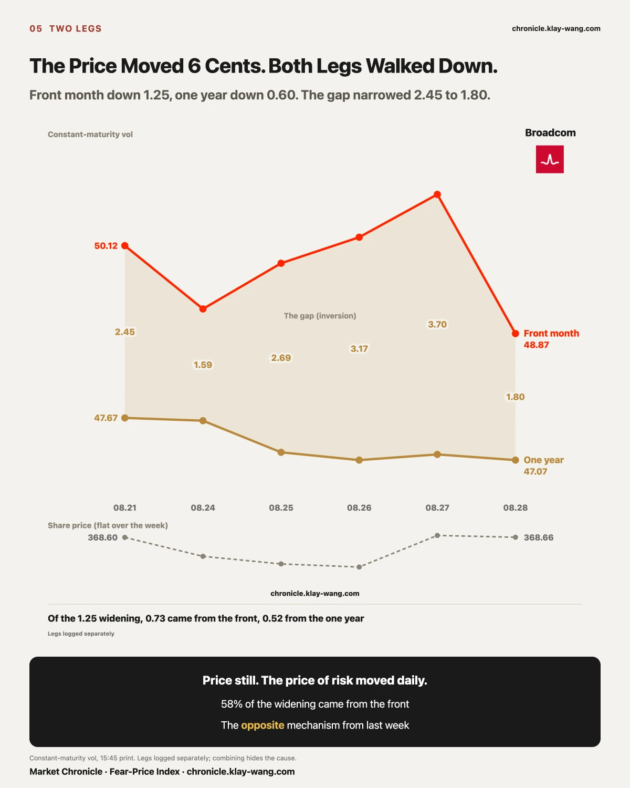
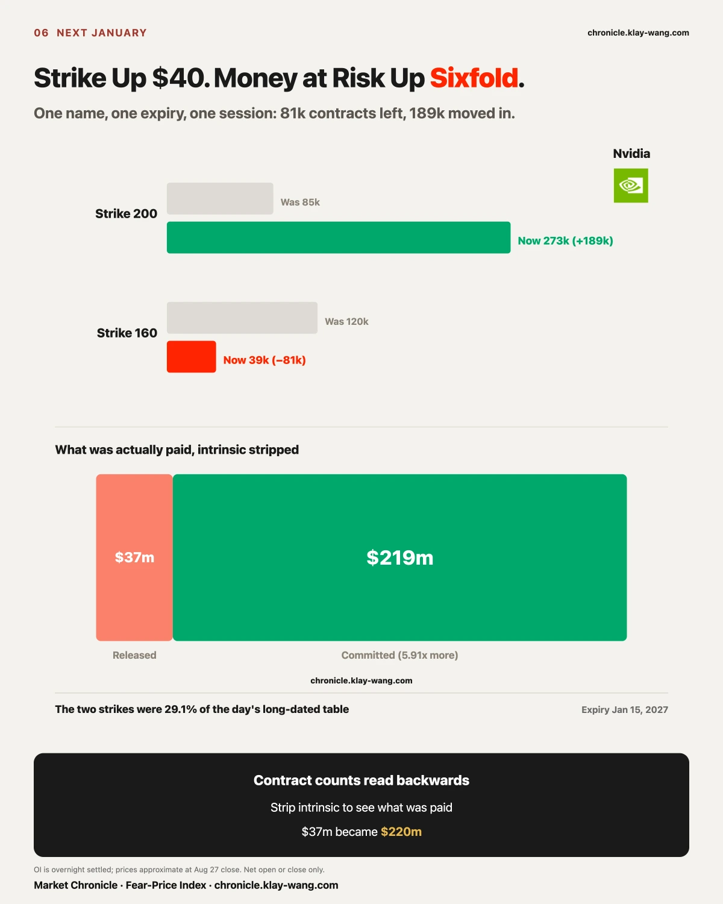
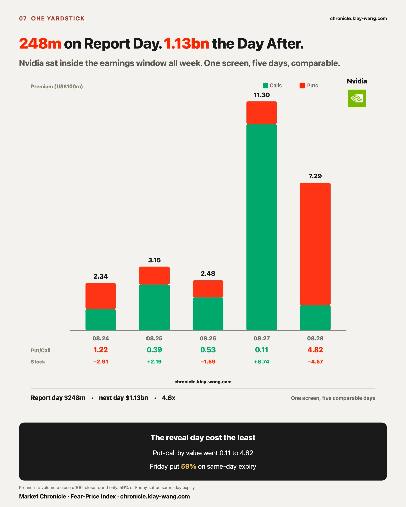
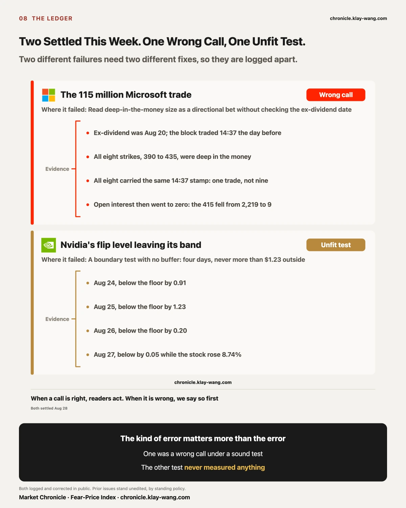
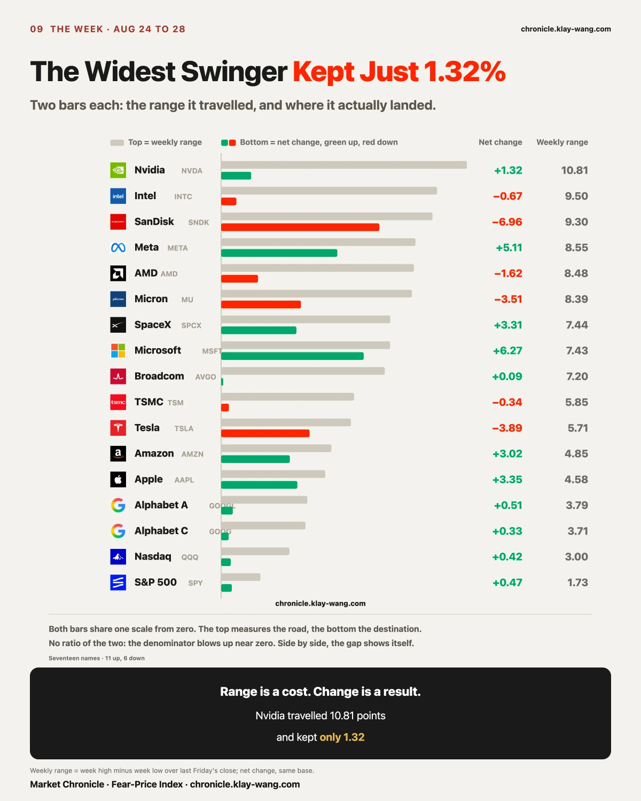
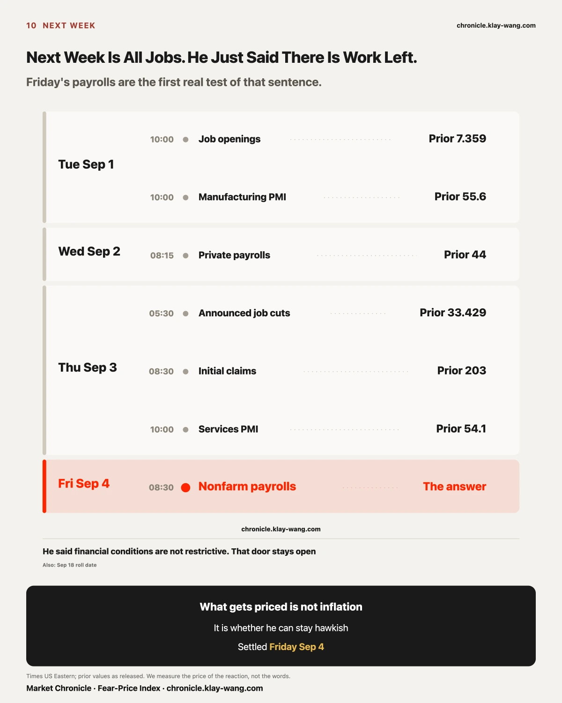

Nvidia closed Friday at 217.55. From the first fence printed on July 23 to the last one settled this week, thirty-six days, every one of the seven big-tech earnings fences now has a result.
The market drew these seven with real money. The number has a name on most platforms: the expected move, usually shown as EM, sometimes called the implied range. The arithmetic is plain. Before each report, the options covering that earnings-night expiry get repriced; take the at-the-money call and the at-the-money put on that expiry, add them, divide by the share price, and you have what the market thinks the stock will travel once the numbers land. That is a quote, not a forecast. Whoever sells that protection has to name a price, and once it trades, it is the consensus of that moment.
Whatever you intend to do with an earnings print, this number is where you start. Buy a single leg and it sets the time value you pay and how far the stock has to travel before you break even. Trade a spread and it prices the distance between your two legs. Sell an iron condor or a butterfly, where you collect on both sides, and the premium you take in is quoted off it, while where you place your wings is a bet the stock stays inside that range. Every one of those structures draws its profit boundary from this one number.
So this ledger records whether that boundary held up across a full earnings season, and the number can be pinned before the fact. All seven were printed in our copy before the reveal, anchored to the close, unchanged since.
Five broken cleanly, one held cleanly, one pushed out and pulled back. Meta never left. Nvidia left and returned. Two different outcomes, not one count.
Look at how the five broke: two upward, three downward. Microsoft and Amazon cleared the upper edge; Tesla, Apple and Alphabet went through the lower one.
That decides what kind of error this is. If all five had broken the same way, the market got the direction wrong and a skew adjustment fixes it. But it is two up and three down. The direction is not fixed. One explanation is left: the width was too narrow.
That is what the ledger means for anyone holding these names. The implied range you saw on the screen before earnings was not enough five times out of seven, and no directional bet repairs it. It is the price the market set for itself, not a guardrail.

Those seven fences are our own ledger for this season. Pull the camera back and the season holds up on a longer ruler too.
We ranked the next-day move after each report for all seven names, quarter by quarter, back to the month ChatGPT launched. (This measures a single close-to-close day after the print, which is not the fence convention of anchoring to the close and settling at expiry. The two sets of numbers do not mix. Microsoft is 15.51 percent here and 19.43 percent in the fence ledger.)
This quarter the seven averaged 10.93 percent in absolute terms, the highest of the fifteen quarters since ChatGPT launched. Behind it sit the first two quarters of 2023 at 9.57 and 9.42, when AI was new and the market had no pricing framework yet. For the two years in between, the average stayed pinned between 3.71 and 6.29 percent, with the low at 3.71 in the second quarter of 2025.
The market spent two years turning these seven reports into a predictable event. This quarter it gave that back in one go.
What gave way can be stated precisely. For two years the market read these names one way: AI spending buys future growth, and more spending scores higher. This quarter that reading broke, and it broke at both ends. Microsoft and Amazon were marked up hard on it; Tesla, Apple and Alphabet were marked down hard on the same reading. One framework producing extreme answers in both directions means the market no longer holds a single yardstick.
That is the other way to tell the story above. Two fences broke upward and three downward, with no fixed direction, because the market did not know which way to lean and set the width down the middle. So the width was not enough.
One more thing changed with it. Insurance now collapses faster than it used to. Nvidia's front month fell 7.28 points the day after its report, which a later section takes apart. The other side of a fast collapse is that the quote printed before the reveal was proven too cheap: five times out of seven, the stock travelled further than the quote sold. Buyers of that protection collected more than sellers took in this season, and for the previous two years that ran the other way.

On August 19, seven days before the report, the band went into the daily, frozen 21 minutes before the open: the first expiry covering earnings, implied move ±11.92 dollars, 5.42 percent of the price, against 2.65 percent for the last pre-earnings expiry that same day.
Every session after that left a mark in the ledger: 5.42, 5.33, 5.25, 5.15, and on the morning of August 26 it settled at ±10.72 dollars, 5.03 percent. Seven days, and the width barely moved. The market's estimate of how much this report would move the stock never changed.
On that last quote the band ran 202.33 to 223.77, midpoint 213.05, which was the prior close.
Three days of reveal: August 26 stayed inside all session, high 213.60, using 5 percent of the upper half. August 27 ran toward 227 pre-market. August 28 printed a window high of 230.47, 163 percent of the upper half, and closed 217.55, back inside by 6.22.
Of the seven, only this one gives opposite answers depending on whether you judge by the intraday high or by the close.
The width holding still for seven days is itself a judgment. Information kept changing across those seven days: the stock moved, peers reported, the macro calendar turned pages. And the market's quote for how much this report would move the stock did not budge. It fixed the number at the start and stopped updating. That is the likeliest root of five fences out of seven being too narrow.
It counts as half because the rule decides that for us. Meta taught us this in July. It was the only one of the first six to hold, and it went outside along the way. On July 30 we printed it as already out, reading −9.23% against a fence of ±6.98%. By settlement it was back at −6.26%, inside.
The same insurance price, read at a different moment, yields conclusions that contradict each other and are both true.
So the main series anchors to the close, not because that moment is more accurate, but because it is the only point we do not get to choose. Choosing the moment is choosing the conclusion.

At the fence end, earnings pushed prices out of their ranges. At this end the opposite happened.
Four events, none of them small: Nvidia's earnings on August 26 after the close, the PCE print the same day, the Fed chair's first major address on August 28, and a preliminary benchmark revision that cut 79,000 from past employment, also on August 28. Any one should have made insurance more expensive.
The nearest tenor fell the most and the furthest fell the least.
A completely different yardstick gives the same answer: thirty-day implied sits at 14.43 while realized volatility over the past sixty-three sessions is 13.46, a gap of 0.97. The one-year still carries 8.70. The next month is priced almost at what has already happened.
The gauge says the same thing. The one-year percentile ran 61.8 last Friday, then 63.4, 60.6, 56.3, 52.5, 50.9. Monday lifted it, and after that it fell every single day. The level itself only moved from 22.69 to 22.16, a change of 0.53. A percentile magnifies the move under it, so both numbers belong here.

The two halves above look like they contradict each other. At the single-name end, five of seven fences broke and the market systematically underpriced how far one stock could travel. At the index end, not one tenor rose and the one-year percentile fell five straight sessions. One says the surprise was bigger than expected, the other says it was smaller.
They are not in conflict. They are two ends of the same thing.
Look at the cross section. The S&P ETF gained 0.47 percent across the week and the Nasdaq ETF 0.42 percent. Both indices stood still. In the same week our strongest name, Microsoft, rose 6.27 percent and our weakest, SanDisk, fell 6.96. 13.23 points between the ends.
The index did not move because its members did not move. It did not move because they cancelled each other out. Microsoft cleared its upper edge by 19.43 percent, Tesla went through its lower edge by 17.36, and inside one index those two nearly net to nothing.
So index-level insurance can get cheaper all week while single-name fences break one after another. Both sentences are true at once, and each is the reason for the other.
On the surface the index did not move; inside it, 13.23 points separate the two ends. That cancelling is itself a shelter. Standing behind it, the week looks calm. Lift it, and five of seven fences are broken.
One more thing, said all the way through: single-name insurance got cheaper too this week. Nvidia's one year went 40.48 to 39.94; Broadcom's went 47.67 to 47.07. Both down.
Single-name insurance did not reprice up. The accurate statement is: the distance single names actually travelled grew this week (five of seven fences broke), and neither layer's far-dated insurance charged more for it.
Risk did not shrink, and it was not repriced. It changed address. Whoever buys index protection genuinely had little to worry about this week. Whoever holds a single name faced a range that was not enough five times out of seven. If someone owns two or three stocks, the one-year percentile falling to 50.9 means nothing to them, because they are not standing behind that shelter.
It is also why a gainers-and-losers table is a blunt instrument: it records what is left after the cancelling. One step further: what decides the volatility of your account from here will not be the index volatility line. It will be whether the fences around the few names you hold are wide enough.

The three yardsticks above all measure the index layer. The same thing holds in a single name, and a single name can lay the near end and the far end out side by side.
Start with one that had no earnings this week. Broadcom went from 368.60 to 368.66 this week, a move of 6 cents (price and both legs from the 15:45 constant-maturity table, same source and same moment, both ends taken at Aug 21 and Aug 28, no mixing of dates).
Its two legs this week: the front month fell 50.12 to 48.87, down 1.25; the one year fell 47.67 to 47.07, down 0.60. The inversion narrowed from 2.45 to 1.80.
Both legs went down, and the front fell more than twice as far as the one year. Last week the widening came from the one year sinking; this week the front sank faster and pushed the inversion back in. Same reading, different cause, and they do not get written as one sentence.
The one-year leg by day: 47.67, 47.63, 47.18, 47.07, 47.15, 47.07. Six sessions, six repricings, five of them lower. The price did not move. The price of risk moved daily.
Now one that did report. The objection writes itself: earnings hit the nearest expiries, so measuring the one year measures the wrong thing.
This week Nvidia laid the two layers out itself.
That is implied-volatility crush, and it settles two things people routinely merge:
Whether a buyer of near-dated options made money is a question about direction. Nvidia rose 8.74 percent on Thursday; anyone positioned beforehand made more on direction than they lost on volatility, even against a 7.28-point collapse. They made money.
Whether insurance is expensive is a question about volatility. Those 7.28 points coming out is exactly what cheaper insurance means.
A buyer profiting and insurance getting cheaper are two sides of one event. They do not conflict.
We measure the second: the price the market sets on the risk, not what anyone's position earned. As for near versus far, this section gives both: 7.28 points off the front in a day, 0.66 off the one year.

Three unrelated tables, one shape.
Nvidia's short-dated premium under one screen, five sessions: Monday 234.6 million with a put-call of 1.22 while the stock fell 2.91 percent; Tuesday 314.8 million at 0.39 while it rose 2.19; Wednesday, earnings day, 248.1 million at 0.53 while it fell 1.59; Thursday 1.13 billion at 0.11 while it rose 8.74; Friday 729.1 million at 4.82 while it fell 4.57.
The reveal day cost about a quarter of what the next day cost.
The yardstick comes first or that list is worthless. The pipeline's screen is applied per name: a macro day widens all twelve, an earnings window widens only the names inside it, and widening is a trade, dropping the expiry floor while doubling the premium bar. So the full-table totals are not comparable across those five days. Only the Nvidia column is, because it sat inside the earnings window all five.
On the long-dated table, Nvidia's January 15, 2027 expiry took 42.6 percent of the day's volume, and two strikes took 68.2 percent of that expiry: the 200 gained 188,531 contracts while the 160 lost 80,731. Strip intrinsic and count only time value: the departing side released 37.1 million and the arriving side committed 219.5 million, a net 182.3 million, 5.91 times what left.
Open interest changes show net opening or closing, not who bought or sold. The shape is what can be shown.
Other names traced the same shape. Salesforce also reported Wednesday after the close, did almost nothing Wednesday, and rose 22.58 percent Thursday. Marvell reported Thursday after the close, fell only 1.49 percent Thursday, and fell 10.28 percent Friday, 6.9 times. That test was written before Friday's open, not chosen after it.

The 115 million Microsoft trade was dividend arbitrage, not a wager. Ex-dividend was August 20; the block traded 14:37 the day before; all eight strikes ran 390 to 435, deep in the money; all eight carried the same stamp; open interest then went to zero. The failure was reading deep-in-the-money size on one expiry as a directional bet without first asking when the stock went ex-dividend.
On Nvidia's flip level, the test was what failed. The original said the first day outside 200 to 210 settles it. By the letter Monday settled it, but across four days it never went more than 1.23 outside, and on Thursday it was 0.05. That is the width of a rounding error. The reissued test carries both a buffer and a duration: two consecutive sessions outside 198 to 212.
Two different failures, two different fixes. The first was a wrong call under a sound test. The second was a test that never measured anything.

What SaaS sells was never the interface; it is the workflows, permissions and data nobody wants to maintain themselves, and a model however capable has to be handed those three before it can touch anything. The real risk is that pricing power slides from per-seat to per-outcome: on the day seats stop growing, revenue may still rise, but the way it rises has changed, and the multiple should change with it.
Salesforce reported Wednesday after the bell, closed Wednesday at 205.62 having barely moved, and closed Thursday at 252.05, up 22.58 percent, with 11.88 in the gap and 9.56 in the session, the open being the day's low, on 39.5 million shares against 5.9 million. Friday added 1.56 percent, 24.50 percent across the two.
The same report showed revenue growth of 11 percent, down two points sequentially, with organic growth of only 6.4 percent. Six points of organic growth bought twenty-four points of stock. What moved was the multiple on it. It was the multiple on the number.
The company's own two figures point at the same two things. Whether data moved: 104 trillion records ingested this quarter, 82 trillion of them zero copy, up 731 percent. What it charges for: 3.2 billion agentic work units this quarter, up 97 percent sequentially, a unit that counts work done.
Here we part with a common reading. The popular line is that what matters from here is earnings delivery. Salesforce this week is the counterexample: six and a bit points of organic growth bought twenty-four points of stock.
Delivery matters, but another layer did the pricing this week. What got priced was the change in how the company charges: from seats to outcomes. The market moved the multiple first, and the results have yet to follow.
Salesforce is outside our seventeen-name table; prices were pulled separately and no options data is attached.

Add up the week's short-dated screen by name and the picture differs from the headlines. The week's A and B tier flow totals $6.172 billion in premium. Nvidia takes $2.657 billion, 43 percent, which fits intuition. Second is Tesla at $1.002 billion, 16.2 percent, and Tesla did not report this week.
Tesla is the only name in the table where puts outweighed calls ($510 million against $492 million). Every other name skews to calls: Meta at 0.29, Apple at 0.21, Micron at 0.41.
And Tesla's price went nowhere: 348.95, 350.25, 345.82, 354.81, 348.75, down 3.89 percent, never leaving the 345 to 355 band. Almost all of that billion sat on the 350, 352.5 and 355 strikes, expiring that day or the next.
The shape says nothing about direction. Open interest on short-dated contracts is an overnight settlement figure, volume-to-open-interest runs hot on expiry by construction, and volume cannot separate buyers from sellers. What the shape does say: a billion dollars of short-dated options sat on strikes straddling the price, and the price never left the corridor between them.
A price held still is a price under force. Whoever sold those options has to hedge: sell as it approaches 355, buy as it approaches 350. That corridor was pressed into shape. Tesla walked the narrowest road in the table this week, and it was simultaneously the second most expensive road.
This has an expiry date. September 18 is a roll date, and every position expiring that day is voided at once. Once the contracts holding the corridor are gone, nothing is holding it. That is testable: if Tesla still sits between 345 and 355 after the roll, the corridor came from fundamentals; if it leaves that week, this week's calm was built out of positioning.
One thing has gone unexplained all week: four large events landed together and not one tenor of insurance rose. The answer is in the ruler.
Our thirty-five-name gap table splits each day into the gap (prior close to open, given overnight) and the session (open to close, walked during the day). The two groups traced opposite shapes.
The seventeen options names: gaps sum to +9.83 points, sessions to −1.22. The gains were handed over at night. The ten high-volatility names: gaps −18.35, sessions +13.54. The losses were handed over at night and bought back during the day.
Summing both legs in absolute terms, the ten high-volatility names actually travelled 223.9 points this week and netted −4.81. The road was 47 times the destination. For the seventeen it was 23 times.
Realized volatility is computed close to close. It measures the destination and cannot see the road. Implied volatility is priced off realized. So most of the volatility that actually occurred this week was never registered by the layer that sets prices.
Insurance stayed cheap because the ruler nets the two halves of each day against each other. Reddit netted 0.11 points and travelled 17.69, a factor of 161. Broadcom netted 0.16 and travelled 11.32, a factor of 71. Someone carried every one of those points with real money, and no insurance charged for any of them.
This was not a quiet week. It was a week whose volatility was consumed by the accounting.
A single name makes it plainer. Nvidia's weekly range was 10.81 percent, the widest of the seventeen, and it netted 1.32. Up 8.74 Thursday, down 4.57 Friday, back roughly where it started. Eleven of seventeen rose, Microsoft leading at 6.27 percent and SanDisk trailing at minus 6.96. The leaderboard records the destination. What you pay for is the road.
That factor of 47, name by name. This week's winners rose almost entirely in the session: MicroStrategy gap −3.07, session +10.48, 77 percent of its path in the day; Palantir gap −2.06, session +5.72, 74 percent; Carvana gap +1.55, session +4.36, 74 percent.
The losers fell almost entirely overnight: MARA gap −4.20, session just −0.45, 10 percent in the day; Coinbase gap −3.63, session −0.11, 3 percent; Robinhood gap −2.38, session −0.73, 23 percent.
The three crypto-linked names split cleanly across the divide: MicroStrategy was bought up 10.48 in the session, while MARA and Coinbase were marked down overnight and barely sold once the bell rang.
This is a market in disagreement, and the disagreement was split across two windows of the day. Liquidity is thin at night and the people trading are few; the session is the whole market. This week, in that group, the few were selling and the many were buying, neither side convinced the other, and the closing price ended up showing nothing.
The use is direct: read only closing prices and you would think that group drifted lower all week. In fact it was pushed down at night and bought all day. What looks like a slow decline is the residue after two forces cancel.
The one exception is IonQ: gap −2.50 and session −10.39, both legs down, 12.89 points off across the week. It is the only name in the group being sold at night and in the session alike.
The Fed chair said three things Friday morning at Jackson Hole: inflation has not slowed meaningfully; policymakers must be confident it is moving toward target and fast enough or the central bank still has work to do; and financial conditions are not restrictive, with rates the primary tool.
The third is the hawkish one. It means he has not closed the door on tightening.
And next week, all five sessions are labour. Job openings and manufacturing PMI Tuesday at 10:00, private payrolls Wednesday at 08:15, announced job cuts Thursday at 05:30, initial claims Thursday at 08:30, services PMI Thursday at 10:00, and nonfarm payrolls Friday at 08:30, all US Eastern.
The reason showed on Friday. Landing in the same minute as his remarks: the preliminary payroll benchmark revision at minus 79,000 against plus 183,000 expected. Past employment was weaker than recorded. Against the prior of minus 862,000 it is a large improvement; against expectations it is a large miss. Both are true.
He said conditions are not restrictive. If Friday's payrolls come in soft, that judgment has to be re-weighed. What we can measure is what the market will pay for the moment he opens his mouth.
One more for later: September 18 is a roll date. Positions expiring that day move in size, and every cross-expiry comparison has to be re-based afterward.
Fear-Price Index by Market Chronicle · Aug 28, 2026 · 51/100: one year volatility VIX1Y at 22.16, in the 51st percentile of the past three years. Higher means dearer. Daily ledger and methodology → chronicle.klay-wang.com · Attribution: Fear-Price Index · Market Chronicle
Options flow and per-name data → chronicle.klay-wang.com/options
Gauge reading and both ledgers → chronicle.klay-wang.com